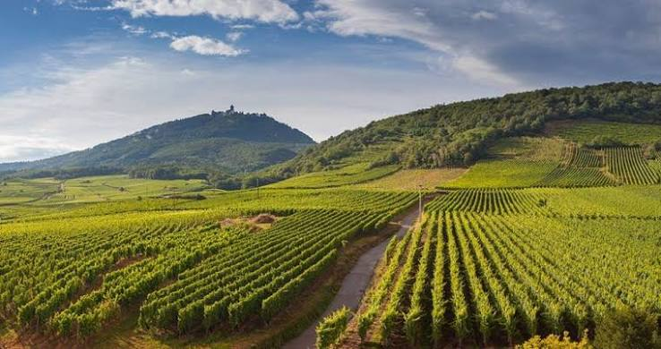

Côtes du
Roussillon AOP


⟹ Vins & Spiritueux ⟸
Une histoire viticole de plus de vingt-cinq siècles. L’histoire des Côtes du Roussillon s’inscrit dans celle, exceptionnellement ancienne, de la vigne en Roussillon. Les sources de l’INAO font remonter son introduction à plus de 2 500 ans : les Grecs auraient diffusé la viticulture à partir des petits ports de la côte rocheuse vers le VIIe siècle avant notre ère. Depuis l’Antiquité, la vigne n’a pratiquement jamais quitté ce territoire méditerranéen, progressivement façonné en un vaste amphithéâtre ouvert vers la mer et encadré par les Corbières, les Pyrénées, les Albères et les contreforts du Canigou.

De l’Antiquité au Moyen Âge, une vigne au cœur du pays catalan. Après les premiers échanges méditerranéens, la période romaine consolide la culture de la vigne et le commerce du vin. Au fil des siècles, monastères, communautés villageoises et propriétaires ruraux entretiennent les vignobles sur les coteaux et les terrasses. L’histoire politique mouvementée du Roussillon — longtemps intégré à l’espace catalano-aragonais avant son rattachement à la France au XVIIe siècle — n’interrompt pas cette continuité viticole. Elle contribue au contraire à forger une culture du vin profondément catalane, à la croisée des influences ibériques et françaises.
Un paysage construit par l’homme et les trois fleuves. L’Agly, la Têt et le Tech ont découpé le territoire en vallées, collines et terrasses successives. À cette géographie s’ajoute une diversité géologique remarquable : schistes, gneiss et granites, calcaires, argiles, sables et terrasses caillouteuses se succèdent sur de courtes distances. Cette mosaïque explique en grande partie la variété des expressions des Côtes du Roussillon. La tramontane, vent sec et fréquent venu du nord-ouest, et un ensoleillement méditerranéen très important favorisent depuis des siècles la maturation et l’état sanitaire des raisins.
Le long règne des vins doux naturels. Pendant des siècles, et particulièrement à l’époque moderne puis au XIXe et au début du XXe siècle, la renommée viticole du Roussillon est étroitement liée aux vins doux naturels. Leur importance économique et culturelle est telle que les vins secs restent longtemps dans leur ombre. En 1936, lors de la mise en place des premières appellations d’origine contrôlée françaises, plusieurs vins doux naturels roussillonnais accèdent très tôt à l’AOC, confirmant la réputation historique de la région.
La reconnaissance progressive des vins secs. Après la Seconde Guerre mondiale, les producteurs cherchent à mieux identifier et protéger les vins secs du département. En décembre 1951, les vins du sud des Pyrénées-Orientales obtiennent le statut de vin délimité de qualité supérieure sous le nom de Roussillon-dels-Aspres. Le 22 janvier 1952, ceux du piémont méridional des Corbières sont reconnus sous les noms de Corbières-du-Roussillon et Corbières-supérieures-du-Roussillon. Ces trois dénominations constituent les ancêtres directs de l’appellation actuelle.
« De plusieurs appellations locales à une grande appellation roussillonnaise : l’AOC Côtes du Roussillon est l’aboutissement de décennies d’organisation et de reconnaissance des vins secs du territoire. »
Repère historique — d’après les éléments historiques de l’INAO1972 : naissance du nom « Côtes du Roussillon ». Une longue démarche engagée dans les années 1960 conduit au regroupement des trois anciennes appellations de vins secs. Le 3 octobre 1972, elles sont réunies sous le nom de Côtes du Roussillon. Cette étape marque la volonté de présenter le Roussillon comme un grand ensemble viticole cohérent tout en conservant la diversité de ses terroirs.
28 mars 1977 : l’accession à l’AOC. Le décret du 28 mars 1977 reconnaît officiellement les Côtes du Roussillon en appellation d’origine contrôlée. Cette reconnaissance consacre les vins tranquilles secs rouges, rosés et blancs du territoire et constitue un tournant majeur : les vins secs disposent désormais d’une identité protégée comparable à celle dont bénéficiaient déjà les célèbres vins doux naturels du Roussillon. L’INAO présente cette accession de 1977 comme l’aboutissement de la montée en qualité des vins secs roussillonnais.
Une profonde mutation du vignoble au XXe siècle. La seconde moitié du siècle est marquée par une transformation qualitative : restructuration des parcelles, baisse progressive des rendements, amélioration des pratiques de cave et recherche d’un meilleur équilibre entre cépages historiques et variétés méditerranéennes complémentaires. Le vieux carignan et les grenaches restent des marqueurs patrimoniaux majeurs, tandis que la syrah et le mourvèdre prennent une place croissante dans de nombreux assemblages. Les blancs s’appuient notamment sur les grenaches blanc et gris, le macabeu et d’autres cépages adaptés au climat sec.
Coopératives et domaines, deux piliers de l’histoire moderne. Comme dans une grande partie du Midi viticole, les caves coopératives ont joué au XXe siècle un rôle essentiel dans la vinification, la commercialisation et la survie économique de nombreux villages. Parallèlement, le développement des caves particulières et la mise en bouteille au domaine ont favorisé l’émergence d’une lecture plus précise des terroirs. Cette double tradition — collective et familiale — demeure une caractéristique forte du paysage viticole roussillonnais.
Une appellation aux multiples visages. Les Côtes du Roussillon constituent l’appellation régionale, tandis que le nord du département abrite l’appellation Côtes du Roussillon Villages, réservée aux rouges et soumise à des conditions spécifiques. À l’intérieur de celle-ci, plusieurs terroirs ont progressivement obtenu le droit d’accoler leur nom à l’appellation : Caramany, Latour-de-France, Lesquerde, Tautavel et Les Aspres. Leur reconnaissance, échelonnée jusqu’en 2017, témoigne de la volonté contemporaine de mettre en valeur la diversité géologique et géographique du Roussillon.
Un patrimoine vivant. Aujourd’hui, les Côtes du Roussillon racontent donc bien davantage qu’une simple appellation créée en 1977. Elles sont l’héritage d’une viticulture méditerranéenne plurimillénaire, de l’histoire catalane du territoire, de la grande tradition des vins doux naturels, puis de la conquête progressive d’une identité propre pour les vins secs. Entre vieilles vignes, terrasses, coteaux balayés par la tramontane, caves coopératives et domaines familiaux, l’appellation continue d’évoluer tout en restant profondément liée aux paysages et à la culture des Pyrénées-Orientales.
Côtes du Roussillon : l'appellation régionale, produite en rouge, blanc et rosé sur l'ensemble du territoire.
Côtes du Roussillon Villages : réservée au rouge, sur 25 communes du nord du Roussillon, avec des exigences de rendement et d'encépagement plus strictes.
Caramany : sols de gneiss, terre de prédilection pour la syrah et le carignan en macération carbonique.
Latour-de-France : sous-sols schisteux qui donnent au grenache une belle intensité.
Lesquerde : vignoble d'altitude sur arènes granitiques, aux vins plus frais et élégants.
Tautavel et Les Aspres : dénominations exigeant un élevage minimal avant commercialisation, pour des vins de garde structurés.
Le vaste territoire de l'appellation invite à la découverte, des Corbières aux portes du Canigou.
Perpignan et sa région où de nombreuses caves particulières et coopératives ouvrent leurs portes pour dégustation.
Les villages de l'Agly comme Latour-de-France, Caramany ou Tautavel, réputés pour leurs Côtes du Roussillon Villages de caractère.
Les fêtes de la vigne et du vin organisées chaque année dans plusieurs communes du Roussillon, avec marchés de producteurs et visites de chais.